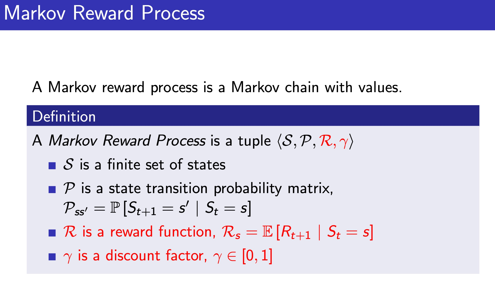

Programming with Probability
Tikhon Jelvis
Math as design language
Uncertainty is hard
Uncertainty + business logic:
even harder
- Supply chain optimization
- Software design
- The probability monad
- Markov processes
Target
- 1978 stores
- 62 distribution centers
Target

Demand Uncertainty

How do we…
- model supply chain behavior?
- make decisions?
How do we manage complexity in our code?


Math + Functional Programming
\begin{equation}
f: \mathbb{R} \to \mathbb{R} \\
f(x) = 1 + 2x + 2x^2
\end{equation}
f :: Double → Double
f x = 1 + (2 * x) + (2 * x ^ 2)
Sets become types
\begin{equation}
f: \mathbb{R^2} \to \mathbb{R} \\
f(x, y) = 1 + 2xy + 2x^2y
\end{equation}
f :: Double → Double → Double
f x y = 1 + (2 * x * y) + (2 * x ^ 2 * y)
\begin{equation}
g(x) = f(x, x + 1) + f (x + 1, x)
\end{equation}
g :: Double → Double
g x = f x (x + 1) + f (x + 1) x
\begin{equation}
F: \textbf{Set} → \textbf{Set} \\
\end{equation}
\begin{equation}
\eta: 1_{\textbf{Set}} \to F \\
\eta_X: X \to F(X)
\end{equation}
pure :: ∀a. a → F a
pure :: a → F a
class Functor f ⇒ Pointed f where
pure :: a → f a
pure :: Pointed f ⇒ a → f a
\begin{equation}
X \in \mathbb{Z} \\
P(X = x) \\
\end{equation}
data Dist a = ...
example :: Dist Int
\begin{equation}
X \in \mathbb{Z} \\
Y \in \{0, 1\} \\
P(X = x|Y = 1)
\end{equation}
example :: Bool → Dist Int
example True :: Dist Int
Functor

fmap :: ∀f a b. Functor f ⇒ (a → b) → (f a → f b)
fmap :: ∀f a b. Functor f ⇒ (a → b) → f a → f b
Functor
die :: Dist Int
die = uniform [1..6]
coin :: Dist Bool
coin = fmap isEven die
Monad
\begin{align}
& D: \textbf{Set} → \textbf{Set} \\
& \eta: 1 → D \\
& \mu: D \circ D \to D
\end{align}
data Dist a
pure :: a → Dist a
join :: Dist (Dist a) → Dist a
Monad
bind :: Dist a → (a → Dist b) → Dist b
bind dist f = join (fmap f dist)
\begin{align}
& P(X = x|Y = y) \\
& P(Y = y) \\
& P(X = x)
\end{align}
data Coin = H | T
-- Bernoulli distribution
coin ∷ Double → Dist Coin
coin p = weighted [(T, p), (H, 1 - p)]
fair = coin 0.5
unfair = coin 0.9
randomCoin ∷ Dist (Dist Coin)
randomCoin =
weighted [ (fair, 0.5)
, (unfair, 0.5)
]
coinGame :: Dist Coin
coinGame = join randomCoin
coinGame :: Dist Coin
coinGame = do
coin ← fair
flip ← if coin == H then fair else unfair
pure flip
Different Interpretations
- Each ← samples the distributions
- Each ← calculates all combinations
- More sophisticated algorithms
Sampling
Run a simulation:
- Sample
randomCoin - If heads, sample
fair - If tails, sample
unfair
All Combinations
toTable :: Dist Coin → [(Coin, Double)]
Markov Processes
- \(S\) states
- \(P(X_{n+1} = x | X_n = y)\) transition probability
Markov Processes
data MarovProcess s = MarkovProcess
{ transition :: s → Dist s }
process.transition :: s → Dist s
Markov Processes
step :: MarkovProcess s → Dist s → Dist s
step process current = do
state ← current
process.transition current
step :: MarkovProcess s → Dist s → Dist s
step current = bind current process.transition
Simulations
iterate :: Monad m ⇒ (a → m a) → a → Stream (Of a) m ()
iterate f a = do
yield a
x ← f a
iterate f x
simulate :: MarkovProcess s → s → Stream (Of s) Dist ()
simulate process start =
iterate process.transition start
Rewards
\begin{equation}
P((X_{n + 1} = x, r) | X_n = y)
\end{equation}
type Reward = Double
data MarkovRewardProcess s = MarkovRewardProcess
{ transition :: s → Dist (s, Reward) }
Rewards
simulateReward :: MarkovRewardProcess s
→ s
→ Stream (Of (s, Reward)) Dist ()
simulateReward = ...
\begin{equation}
R: \textbf{Set} → \textbf{Set} \\
R(S) = S \times \mathbb{R}
\end{equation}
\begin{align}
& \eta: x \mapsto (x, 0) \\
& \mu: ((x, r_1), r_2) \mapsto (x, r_1 + r_2)
\end{align}
data WithReward s = WithReward
{ state :: s
, reward :: Reward
}
pure :: s → WithReward s
pure s = WithReward { state = s, reward = 0 }
join :: WithReward (WithReward s) → WithReward s
join wr = WithReward
{ state = wr.state.state
, reward = wr.state.reward + wr.reward
}
Composition
\(D \circ R\) forms a monad
Dist (s, Reward) = Dist ∘ WithReward
Composition
We can compose any monad with \(R\)
data WithRewardT m s = WithRewardT
{ state :: m s
, reward :: Reward
}
\(\text{ignore}: M \circ R \to M\)
ignore :: WithRewardT m s → m s
ignore wr = wr.state
data MarkovProcess m s = MarkovProcess
{ transition :: s → m s }
simulate :: Monad m ⇒ MarkovProcess s → s → Stream (Of s) m ()
simulate process start =
iterate process.transition start
simulateReward :: Monad m
⇒ MarkovProcess (WithRewardT m s)
→ s
→ Stream (Of s) (WithRewardT m s)
simulateReward = simulate


(slides: David Silver)
data MarkovProcess m s = MarkovProcess
{ transition :: s → m s }
type MarkovRewardProcess m s =
MarkovProcess (WithRewardT m) s
Inventory Control
- gain per sale
- lose per order
- lose per inventory/day
- lose per missed demand
transition = \ inventory → do
reward (-1 * inventory)
let ordered = 3
reward (-4 * ordered)
demanded ← forecast
let sold = min demanded inventory
missed = demanded - sold
reward (sold * 8 - missed * 14)
pure (inventory - sold + ordered)


(slide: David Silver)
data MarkovDecisionProcess m s a = MDP {
step ∷ s → a → m (s, Reward)
}
data MarkovDecisionProcess m s a = MDP {
step ∷ s → a → WithReward m s
}
Optimization
Find a policy \(S → A\) that maximizes expected reward
type Policy s a = s → a
MDP + Policy = MRP
apply :: Monad m
⇒ MarkovDecisionProcess m s a
→ Policy s a
→ MarkovProcess m s
Different Interpretations
- some algorithms need full distributions
- some algorithms need sampling
- same
MDPtype works for both!
Reusable Pieces
Point Processes
\(D \circ B\)
type PointProcess x = Dist (Bag x)